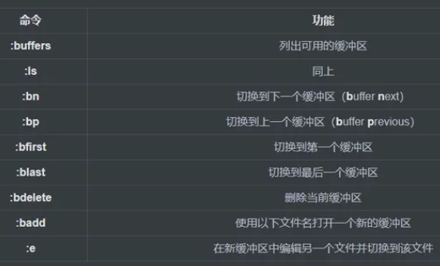

无论是在debian还是ubuntu下都经常使用到神奇的vim编辑器，所以写了这篇文章做个记录。
初始化配置
如果你刚下载好虚拟机，你的vim应该是一个大白板，甚至连行号都没有，所以我们进行初始化的配置。
//进入vim设置的编辑器vim ~/.vimrc
按下i进入编辑界面，选择需要的功能进行设置，如果你需要复制但是鼠标右键无效，你可以多按几次esc返回到默认操作，然后输入:set mouse=r，就可以快乐地右键复制咯。
```"打开语法高亮syntax on
"使用配色方案colorscheme desert
"打开文件类型检测功能filetype on
"不同文件类型采用不同缩进filetype indent on
"允许使用插件
filetype plugin onfiletype plugin indent on
"关闭vi模式set nocp
"与windows共享剪贴板set clipboard+=unnamed
"取消VI兼容，VI键盘模式不易用set nocompatible
"显示行号, 或set numberset nu
"历史命令保存行数set history=100
"当文件被外部改变时自动读取set autoread
"取消自动备份及产生swp文件set nobackupset nowbset noswapfile
"允许使用鼠标点击定位set mouse=a
"允许区域选择set selection=exclusiveset selectmode=mouse,key
"高亮光标所在行set cursorline
"取消光标闪烁set novisualbell
"总是显示状态行set laststatus=2
"状态栏显示当前执行的命令set showcmd
"标尺功能，显示当前光标所在行列号set ruler
"设置命令行高度为3set cmdheight=3
"粘贴时保持格式set paste
"高亮显示匹配的括号set showmatch
"在搜索的时候忽略大小写set ignorecase
"高亮被搜索的句子set hlsearch
"在搜索时，输入的词句的逐字符高亮（类似firefox的搜索）set incsearch
"继承前一行的缩进方式，特别适用于多行注释set autoindent
"为C程序提供自动缩进set smartindent
"使用C样式的缩进set cindent
"制表符为4set tabstop=4
"统一缩进为4set softtabstop=4set shiftwidth=4
"允许使用退格键，或set backspace=2set backspace=eol,start,indentset whichwrap+=<,>,h,l
"取消换行set nowrap
"启动的时候不显示那个援助索马里儿童的提示set shortmess=atI
"在被分割的窗口间显示空白，便于阅读set fillchars=vert:\ ,stl:\ ,stlnc:\
"光标移动到buffer的顶部和底部时保持3行距离, 或set so=3set scrolloff=3
"设定默认解码set fenc=utf-8set fencs=utf-8,usc-bom,euc-jp,gb18030,gbk,gb2312,cp936
"设定字体set guifont=Courier_New:h11:cANSIset guifontwide=新宋体:h11:cGB2312
"设定编码set enc=utf-8set fileencodings=ucs-bom,utf-8,chineseset langmenu=zh_CN.UTF-8language message zh_CN.UTF-8source $VIMRUNTIME/delmenu.vimsource $VIMRUNTIME/menu.vim
"自动补全filetype plugin indent onset completeopt=longest,menu
"自动补全命令时候使用菜单式匹配列表set wildmenuautocmd FileType ruby,eruby set omnifunc=rubycomplete#Completeautocmd FileType python set omnifunc=pythoncomplete#Completeautocmd FileType javascript set omnifunc=javascriptcomplete#CompleteJSautocmd FileType html set omnifunc=htmlcomplete#CompleteTagsautocmd FileType css set omnifunc=csscomplete#CompleteCSSautocmd FileType xml set omnifunc=xmlcomplete#CompleteTagsautocmd FileType java set omnifunc=javacomplete#Complet```
此时你已经配置好了vim，接下我将介绍vim的一些高级使用技巧
vim高级使用技巧
vim存在默认模式与插入模式，在默认模式下。按下a或者i可以切换到插入模式，在插入模式下，可以通过esc返回到默认模式。
默认模式可以用类似于快捷键的操作，插入模式可以进行文本的编写。
光标移动
虽然vim推荐使用hjkl进行光标的移动，但是我还是更加习惯于上下左右按键
基本动作
- h:左
- l:右
- j:下
- k:上
其他移动
- gg:文档顶部
- G:文件底部或行号（如果在G前面放置数字）
- w:下一个单词（word）
- e:单词尾（end）
- 0:行首（第0个字符）
- $:行尾（类似正则表达式语法）
前述已经有许多移动命令，一般的初学者都已经知道了。但是，我们也可以通过其他方式引导移动。
我们可以使用以下命令将光标移动到页面当前可见部分的不同区域:
- H:将光标移动到当前可见页面的顶部（High）
- M:将光标移到当前可见页面的中间（Middle）
- L:将光标移动到当前可见页面的底部（Low）
如果要移动页面而不是光标（注意是页面动，光标不随页面动），则可以使用以下命令:
- CTRL-D:向下翻页（Down）
- CTRL-U:向上翻页（Up）
- CTRL-E:向下滚动一行
- CTRL-Y:向上滚动一行
我们还可以按句子、段落进行导航。如果您键入常规文本而不是代码，这将很有用。这些类似于单词和行导航命令。
- ):移至下一个句子的开头
- (:移至上一句的开头
- }:移至下一个段落的开头（以空白行分隔）
- {:移至下一段的开头（以空白行分隔）
vim复制、粘贴、剪切
选择文本
- v+光标移动 （按字符选择）高亮选中所要的文本，然后进行各种操作（比如，d表示删除）。
- V （按行选择）
- v+选中的内容+c 更改选中的文字
复制：y(ank)
- y 用v命令选中文本后，用y进行复制
- yy 复制当前行，然后用p进行粘贴
- 5yy 复制从当前行开始的5行
- y\_ 等同于yy
- Y 等同于yy
- yw 复制当前单词
- y$ 从当前位置复制到行尾
- y0 从当前位置复制到行首
- y^ 从当前位置复制到第一个非空白字符
- yG 从当前行复制到文件结束
- y20G 从当前行复制到第20行
- y?bar 复制至上一个出现bar的位置
粘贴：p(aste)
- p(小写) 在光标位置之后粘贴
- P(大写) 在光标位置之前粘贴
剪切
- v + 方向键(hjkl)选中内容 + d 剪切 + p粘贴
剪贴板
默认剪贴板
vim提供12个剪贴板，它们的名字分别为vim有11个粘贴板，分别是0、1、2、...、9、a、“。如果开启了系统剪贴板，则会另外多出两个：+和*。使用:reg命令，可以查看各个粘贴板里的内容。
``:reg``
在vim中简单用y只是复制到“（双引号)粘贴板里，同样用p粘贴的也是这个粘贴板里的内容。
复制和粘贴到指定剪贴板
要将vim的内容复制到某个粘贴板，需要退出编辑模式，进入正常模式后，选择要复制的内容，然后按"Ny完成复制，其中N为粘贴板号（注意是按一下双引号然后按粘贴板号最后按y），例如要把内容复制到粘贴板a，选中内容后按"ay就可以了。
要将vim某个粘贴板里的内容粘贴进来，需要退出编辑模式，在正常模式按"Np，其中N为粘贴板号。比如，可以按"5p将5号粘贴板里的内容粘贴进来，也可以按"+p将系统全局粘贴板里的内容粘贴进来。
（划重点）
如果在虚拟机中使用vim最好的使用外部粘贴板的方式就是输入:set mouse=r，就可以快乐地右键复制粘贴咯。
同时打开多个窗口
`` vim file1 file2 file3``
每个文件都在自己的缓冲区中打开。目前，我们只能看到第一个文件。
通过输入，我们可以看到可用的缓冲区:buffers。
``:buffers:buffers 1 %a "file1" line 1 2 "file2" line 0 3 "file3" line 0Press ENTER or type command to continue``
如果我们希望进入下一个缓冲区，可以键入:bn。这将更改为下一个缓冲区。
类似地，我们可以通过键入b数字或名称（在上面的第一列）或名称来切换到缓冲区。即使文件名不完整，也可以使用。
以下是一些管理缓冲区的命令:

如何管理窗口
vim分别管理多个文件的控制机制是基于windows或views的概念。这使您可以将当前编辑区域划分为不同的窗口，以便可以同时查看多个缓冲区。
要将当前工作空间拆分为单独的窗口，可以键入:split或:sp。这将在当前窗口上方打开一个新窗口，并将光标更改到该窗口。您可以使用上面显示的buffer命令更改至新窗口中显示的缓冲区。
以下是一些我们可以用来创建和管理窗口的命令:
- :sp:将当前窗口水平一分为二。最初，每个窗口将显示相同的缓冲区。（split）
- 在“ sp”之前加上数字以设置新窗口的高度。
- :vs:垂直拆分当前窗口。最初，每个窗口将显示相同的缓冲区。（vertical split）
- 在“ vs”之前加上数字以设置新的窗口宽度。
- CTRL-ww:将光标切换到下一个窗口（window）
- CTRL-w（移动）:将焦点沿指示的方向（h，j，k，l）更改到指定窗口
- CTRL-wc:关闭当前窗口（close）
- CTRL-w+:增加当前窗口的大小
- CTRL-w-:减小当前窗口的大小
- CTRL-w=:将所有窗口设置为相等大小
- ＃CTRL-w\_:将高度设置为前面的“＃”指示的大小
- :only:关闭当前窗口以外的所有窗口
- CTRL-wn:使用新缓冲区打开新窗口（new）
如何管理标签
在vim中管理多个文档的第三个概念是tabs。与许多程序不同，在vim中，选项卡可以包含窗口，而不能相反。选项卡可以包含窗口，这些窗口充当缓冲区的视口。
我们可以分别管理每个选项卡的窗口布局。要创建标签，我们可以使用:tabnew命令打开一个新标签。
一些简单的选项卡管理方法是:
- :tabnew:打开新标签
- :tabclose:关闭当前标签页
- :tabn:切换到下一个标签（next）
- gt:切换到下一个标签
- :tabp:切换到上一个标签
- gT:切换到上一个标签
- :tab ball:在单个选项卡中打开所有缓冲区
- :tabs:列出所有可用的标签
随着缓冲区，窗口和选项卡的混排，有时会混淆您当前正在查看的文件。查找当前正在查看的文件名的快速方法是键入:
- CTRL-g:显示当前文件名
针对不同文档的小技巧
纯文本
如果要编辑纯文本文档，vim可以通过多种方式为您提供帮助。此功能必不可少的功能之一是拼写检查。
要在vim中打开拼写检查，可以输入:
``:set spell``
要设置使用的语言，您可以输入:
``:set spelllang=[language abbreviation]``
现在，针对英文文本文档，将检查您的文档的拼写。波浪线将出现在拼写错误的单词下方。这就是您的使用方式。
要在拼写错误的单词之间来回跳转，请输入:
``]s # Jump to next mistake[s # Jump to previous mistake``
将光标移到拼写错误的单词上方后，您可以通过输入以下内容查看拼写建议:
``z=``
这将为您提供可能的匹配项列表。您可以通过选择关联的数字来选择所需的选项，或者可以按Enter键以保持单词原样不变。
如果您想将单词标记为非拼写错误，可以将其添加到拼写列表之一。Vim维护两个拼写列表，一个常规列表；另一个是临时列表，将仅用于当前会话。
要将单词添加到“好”单词列表中，请使用以下命令之一:
``zg # Adds word to regular dictionaryzG # Adds word to the current session dictionary``
如果您不小心添加了一个单词，则可以通过转到该单词并键入以下内容来将其删除:
``zug # Remove word from regular dictionaryzuG # Remove word from the current session dictionary``
如果您发现自己不得不经常输入长词组的短语，则可以添加缩写。
如果我们键入:ab后跟一个缩写词和一个全名，则每当我们键入一个缩写词和一个空格后，vim都会输入全名。
例如，如果我们遵循Richard Stallman的示例使用“ GNU/Linux”替换“ Linux”的这个词，那么我们可以创建一个自动执行的缩写:
``:ab Linux GNU/Linux``
现在，当我们键入“ Linux”时，vim将自动替换为“ GNU / Linux”。
``Linux is an operating system.``
更改为:
``GNU/Linux is an operating system.``
但是，如果发现全文专门谈论内核，那么只有Linux这个词是合适的，我们可以在键入空格之前通过键入CTRL-V来取消扩展。
``GNU/Linux is an operating system with Linux(CTRL-V) as a kernel.``
如果我们不再希望使用此缩写，则可以使用以下命令将其删除:
``:una Linux``
现在我们的“ Linux”将仍然是“ Linux”。
- * *
您可能需要不时做的另一件事是插入传统qwerty键盘上没有的字符。我们称这些为“特殊字符”。您可以通过输入以下内容来查看vim的特殊字符集:
``:digraphsNU ^@ 10 SH ^A 1 SX ^B 2 EX ^C 3 ET ^D 4 EQ ^E 5AK ^F 6 BL ^G 7 BS ^H 8 HT ^I 9 LF ^@ 10 VT ^K 11FF ^L 12 CR ^M 13 SO ^N 14 SI ^O 15 DL ^P 16 D1 ^Q 17D2 ^R 18 D3 ^S 19 D4 ^T 20 NK ^U 21 SY ^V 22 EB ^W 23CN ^X 24 EM ^Y 25 SB ^Z 26 EC ^[ 27 FS ^\ 28 GS ^] 29RS ^^ 30 US ^_ 31 SP 32 Nb # 35 DO $ 36 At @ 64``
现在，您可以通过在左列中键入CTRL-k两个字母，然后在右列中插入任何字符。
例如，在我的计算机上，要输入英镑符号，可以在插入模式下输入以下字符:
``CTRL-k Pd``
编写源代码
如果您正在编码，那么vim有很多不同的东西可以帮助您对代码进行操作。
最基本的是语法高亮显示。您可以通过键入以下内容来启用语法高亮:
``:syntax on``
这应该根据检测到的文件扩展名为文件设置语法高亮。如果要更改高亮的语言类型，可以通过以下方式设置语言:
``:set filetype=[language]``
如果您想使用系统命令来修改文件中的某些行，则可以!在正常模式下通过使用命令来调用它。
该命令接受动作，然后将其发送给随后的命令。
``![motion] filter``
例如，要对从当前位置到文件末尾的行进行排序，可以键入:
``!G sort``
排序是一种Linux命令，默认情况下按字母顺序对输入进行排序。
如果我们要将命令的输出插入文件中，请导航至需要输出的空白行。类型:
``!!command``
这会将指定命令的输出内容放入文档中。
如果我们想查看命令的结果，但又不想将其插入文档中，则也可以使用命令模式（:)版本，该版本为:
``:!command``
这将显示命令的结果，但完成后将使您返回到未更改的文档。
减少重复操作（宏的使用）
通常在编辑或创建任何类型的文件时，您会发现自己重复了许多相同或相似的操作。幸运的是，vim提供了一些将命令组保存到宏中的方法。
要开始录制宏，您可以键入q后跟字母以命名该宏。
``qa # will save macro "a"``
现在，您键入的任何命令现在都将记录为宏的一部分。要结束宏，可以再次键入q。
因此，如果我们键入:
``qa0c3wDELETED<esc>q``
这将开始一个宏（保存为“ a”），转到该行的开头，然后用单词“ DELETED”替换接下来的三个单词。然后退出插入模式并结束宏。
要从当前光标位置开始播放此宏，请使用@字符，后跟宏引用:
``@a``
这将从当前位置开始重播宏命令。
如果我们希望创建一个以插入模式结束的宏，则必须以另一种方式结束该宏（键入“ q”将仅插入字母q）。我们可以在插入模式下执行普通模式命令CTRL-O，然后键入“q”来结束宏的录制。
因此，如果我们要更改此行上第一个括号的内容，则可以有一个宏，内容为:
``qi0f(lct)<CTRL-O>q``
这将创建一个宏 “i”。宏移动到当前行的开头。然后找到左括号并向右移动一个字符（在括号内移动）。然后，它将更改所有内容，直到右括号为止。在vim处于插入模式下等待替换文本时，我们按键，CTRL-O然后q结束宏，从而使我们处于插入模式下准备替换文本。
结束
以上就是vim常用的一些技巧参考，部分源自知乎，仅供自己参考。